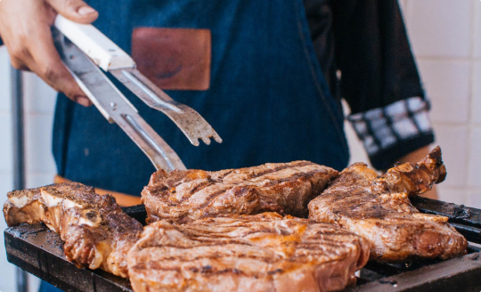

Suprême de volaille croustillant
Une chair moelleuse, une peau dorée et une jus corsé aux herbes fraîches pour une assiette élégante et réconfortante.
Voir la recetteReunissez des produits simples, frais et parfaitement dosés. Cette recette joue sur l'équilibre entre la douceur du miel, la vivacité du citron et le parfum boisé du romarin pour obtenir une volaille délicate, dorée et profonde en bouche.

Suivez pas à pas la cuisson, l'arrosage et le repos de la viande pour retrouver à la maison l'élégance de nos assiettes. Le secret tient dans la justesse de la chaleur et dans une sauce courte, brillante et parfaitement nappante.
Nos recettes prolongent l'expérience du restaurant avec des associations fines, des cuissons maîtrisées et une cuisine généreuse pensée pour les grandes tables comme pour les dîners intimes.
Une chair moelleuse, une peau dorée et une jus corsé aux herbes fraîches pour une assiette élégante et réconfortante.
Voir la recette
Une entrée lumineuse, iodée et précise, relevée par les zestes, l'huile d'olive et quelques herbes fines.
Voir la recette
Une texture soyeuse, un parfum de sous-bois et quelques copeaux de parmesan pour une assiette tout en douceur.
Voir la recette
Un dessert aérien, croquant et fondant, avec une crème légère à la vanille et des fruits de saison.
Voir la recette